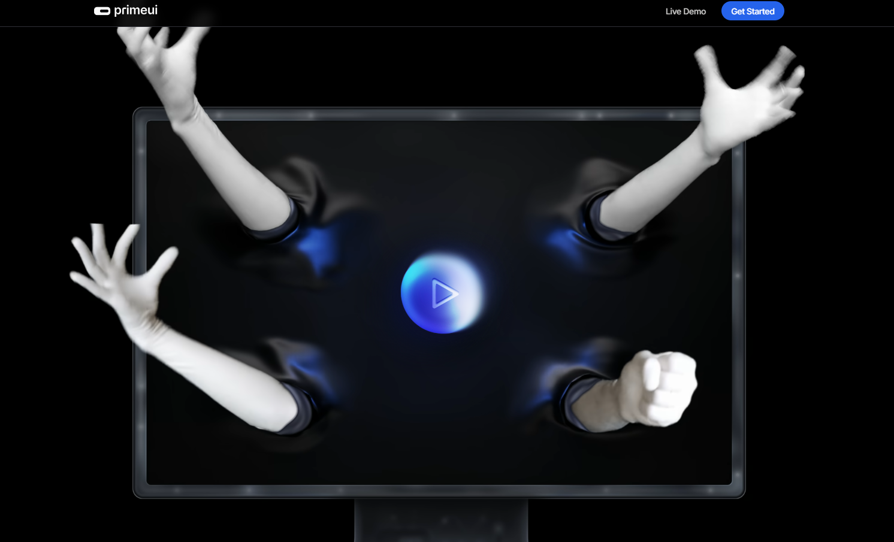

Prime UI
- Лендинг
- Сервисы и приложения
- Инструменты разработчика
- Разработчикам
- Дизайнерам
- Агентствам
- Утилитарный техно
- Минимализм
- Тёмная тема
- Синий фон
- Видео-фон
- Микроанимации
- Next.js
- React
- Turbopack
- Tailwind CSS
- Vercel
- Английский язык
- Действующий сайт

Что это
Лендинг Prime UI — ИИ-конструктора сайтов. Почти чёрный первый экран с рамкой монитора, из которой в разные стороны вылезают руки, и синей кнопкой Play; дальше — демо и объяснение пути от sitemap до готового кода Next.js и Tailwind CSS. Стильный лендинг ИИ-конструктора сайтов. Очень необычный, привлекающий внимание блок с демо-видео.
Что смотреть в первую очередь
Смотреть первый экран с монитором и руками, затем — демо-видео и шаги sitemap → layout → экспорт.
Приёмы
- Видео-фон
- Микроанимации
Интересные факты
- Первый экран почти чёрный: в центре — рамка монитора, из которой в разные стороны вылезают руки, а поверх — синяя кнопка Play.
- В шапке только логотип primeui, ссылки Live Demo и Get Started; больше ничего не отвлекает.
- На странице несколько видео: маленькое 190×190, большое 1920×1580 для первого экрана и отдельные ролики для блоков функций.
- Лендинг объясняет продукт по шагам: sitemap → варианты лейаутов → экспорт в Next.js и Tailwind CSS.
- Внизу — FAQ, тарифы и лицензия, ссылки Privacy Policy и Terms of Service, подпись Toolcraft.
- Собран на Next.js с Turbopack и Tailwind CSS.
Паспорт
- Домен
- primeui.com
- Тип сайта
- Лендинг
- Категории
- Сервисы и приложения
- Подкатегории
- Инструменты разработчика
- Для кого
- Разработчикам, Дизайнерам, Агентствам
- Стиль
- Утилитарный техно, Минимализм
- Язык
- Английский
- Страна
- не указано
- Автор
- Toolcraft
- Год
- не указано
- Добавлен в коллекцию
- 18.11.2026
Палитра
-
#050509— 81% кадра -
#2F3138— 7% кадра -
#C6C6C7— 3% кадра -
#EEEEEF— 2% кадра -
#A09F9F— 2% кадра
- Режим
- Тёмная
- Цвет фона
- Синий
Технологии
- Next.js
- React
- Turbopack
- Tailwind CSS
- Vercel